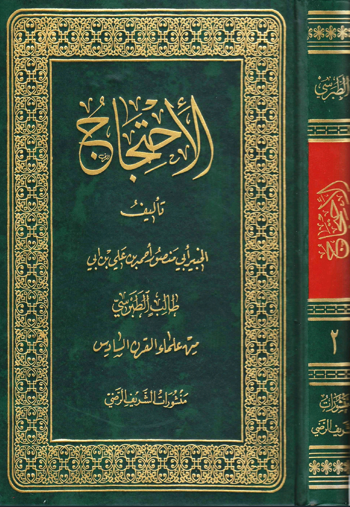

Umm kulthum bint Ali states:
O people of Kufa, what is wrong with you? You betrayed Husain, killed him, plundered his money and
inherited him, and enslaved his women and oppressed him.
Murtaḏa Al-Muṭaharī states:
“And there is no doubt that Ahlul-Kufā were the shī’a [followers] of ‘Alī (رضي الله عنه),
and that the people who killed Al Imam Al Hussain (رضي الله عنه) were from his shī’a,
and this is why the historians wrote about Ahlul-Kufā saying: ‘Their hearts are with him,
and their swords are against him’ and this is because the ummayads destroyed the islamic ideology
inside the hearts of the hearts of Ahlul-Kufā, and there wasn’t any of them who had bright Islamic theology”
[Source: Al-Malḥama Al-Ḥussainiyah vol. 1, pg. 129]

Zaynul Abideen states:
O people, I appeal to you by Allah, do you know that you wrote to my father and deceived him?
You fought him and let him down, so he cursed you for what you did and horrible was your opinion
to betray him. How can you look at Rasulullah (saw),I am telling you: YOU KILLED MY FAMILY AND
VIOLATED MY SANCTITY, YOU ARE NOT FROM MY PEOPLE AND YOU GAVE A PROMISE AND A BAYAH
Here something interested I found it that even Shias agree.
Shi’i scholar:
Ayatollah Mohammad Asif Muhsini describes this phenomenon by saying, “Most of the details of what occurred
in Karbala are unknown”(Mashra’at Bihar Al-Anwar 2/156)
Most story’s either overpraise Hussain or just discredit yazid, or most stories are just fabricated ones